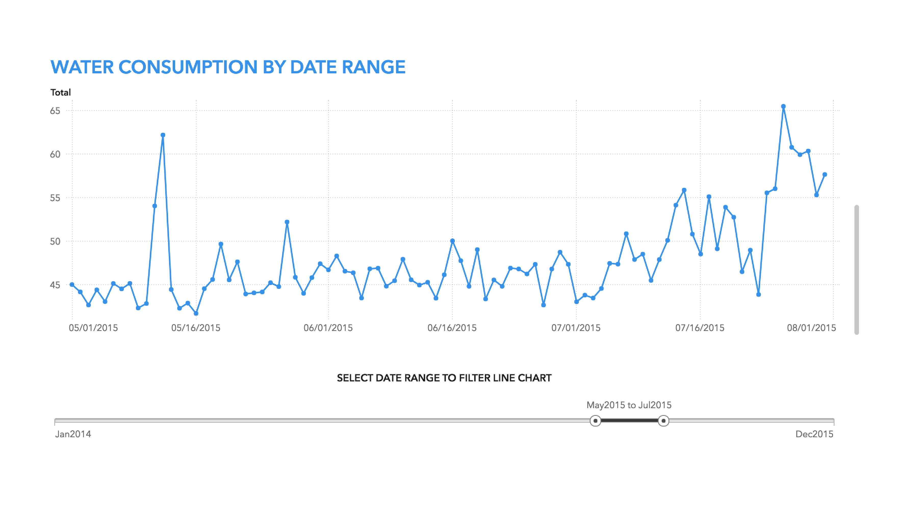
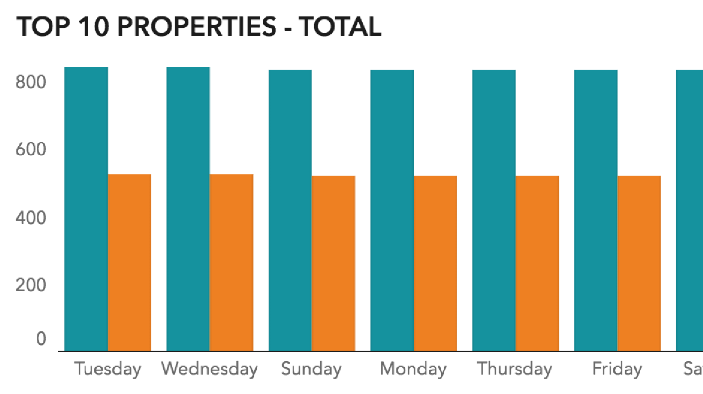
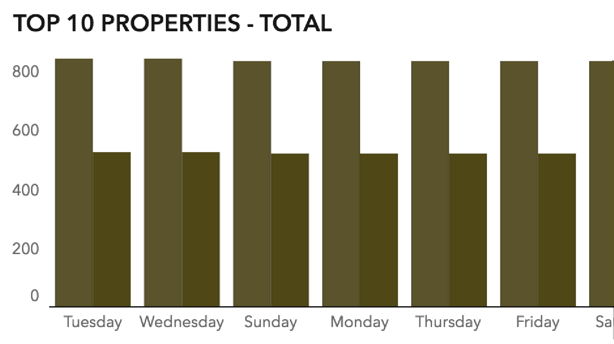

Drawing Your Audience in with Color
Why Use Color with Care?
- Improve understanding: color affects how we interpret information. When you use color effectively, your audience can understand your data story quickly and with confidence.
- Clarify your data story: color can establish meaning and hierarchy in a report or dashboard. Basic knowledge of the color wheel can help you to skillfully apply color.
- Create a successful visual style: color can enhance the overall visual style of a report or dashboard. By understanding the relationships between colors, you can create a persuasive visual style that advances your data story.
Understand How the Report Be Viewed
Will your report be viewed on a computer, on a printed page, or projected onto a screen? Each location changes how color is produced.
Computer screens produce richer and brighter colors because the computer screen adds light behind the color.
A printed report (especially black, white, and grayscale print) requires using more unsaturated color and not using a background color. This makes it easier and more cost effective to print.
TIP: If you know your report will be printed, perform color runs (also called test prints) on your report to ensure the saturation and contrast is sufficient and produces a nice looking result.
A projected report requires colors with strong contrast to the background, so that the color richness comes through most effectively when projected on a white screen.
Resist the Overuse of Color
Adding color for the sake of adding color results in visual clutter. Instead, focus your audiences’ eye by using only a few colors. This is a key strategy in the world of design. Less is more. When in doubt, save color for data visualization only. If you must use color outside of your visualization, make sure to use a color already in your color palette.
This report uses the same blue color from the visualization in the title.
To avoid overusing colors, ask yourself the following questions:
- Does the report use more than 5 colors?
- Does the report use a high percentage of only one color from my palette?
- Is there color in every available space?
- Am I using an image for the background or foreground? Images can contain a vast amount of color which can distract your audience from your core message.
Reduce Visual Distraction with Harmonious Colors
Color Relationship
Colors that lie opposite of each other on the color wheel (for example, blue and orange) are known as complementary colors. When used together, side by side, or on the same page, complementary colors are considered pleasing to the eye. Using blue and orange within a graph visualization is a good idea because these colors are quickly distinguishable from each other. Keep in mind however that using these colors on top of each other (for example, red foreground and green background) causes color vibration. Color vibration refers to the unpleasant visual appearance caused when placing certain colors on top of each other. If your report has a colored background, use black or white text as the foreground. Doing so helps to avoid color vibration, which is considered harmful to the eyes and causes a loss of detail in the foreground’s shape.
Caption
Caption
Colors adjacent to one another on the color wheel are called analogous colors. Using analogous colors within the same visualization makes it difficult to perceive the block of color, especially for those with color blindness. Eight percent of men have the most basic form of color blindness and have difficulty distinguishing colors with a red and green hue.

Caption
Caption
Graph palettes shipped with SAS Visual Analytics are optimized to enhance readability for as many users as possible. The graph palette cycles through warm and cool colors, while avoiding hues which might trigger inappropriate combinations or meanings.
Color Contrast
To ensure readability, choose background colors with sufficient contrast to your foreground elements.
Examples of poor contrast include:
- Grey text on a black background
- Red bars on a black background
- Pictures as backgrounds
Depending on the context, white on a black background can have poor contrast. Black can start to “close in” on white shapes such as text. Thin, finely drawn white text on a black background can start to disappear, or get lost, when it is printed. However, you can view the same text on a computer because modern computer monitors have a higher pixel density and can create sharper results.
Caption
Caption
Color Amount
Color harmony is also effected by the amount of color that you use. You do not want your audience distracted from your data story by large areas of color.
Aread charts, such as pie charts or geographical maps, contain a lot of color. Axis charts, such as line charts or scatter plots, contain a small amount of color. Use a mix of these two groups of charts, as well as carefully adjusted color, to balance the page: